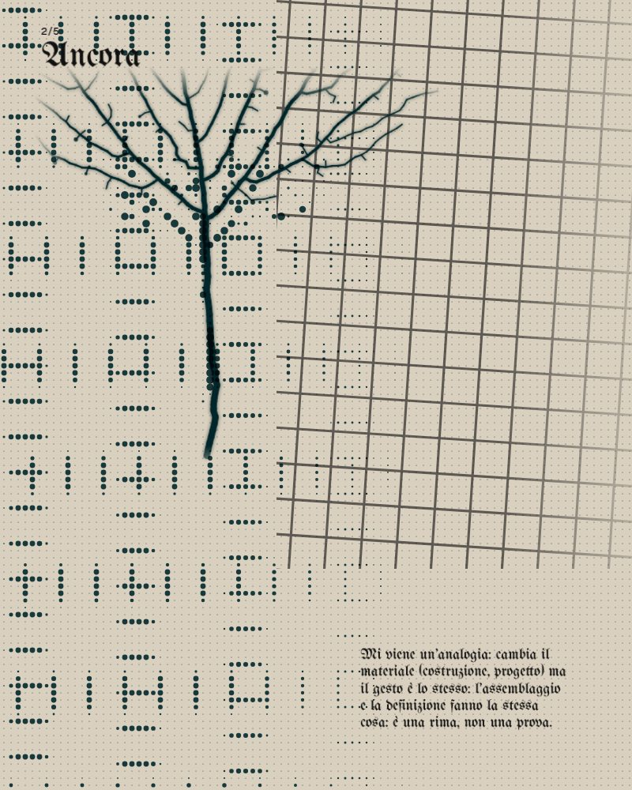

Giorno 1820

1/5 · Quello che il teorema è per il rapporto
ho letto "Definizione"; "letto" lo capisco solo per definizioni; mi sta vicino a ordine, scritta, campo, vuoto; ricerca "letto" (approfondire): Come si guarda letto da vicino?; esercizio di varietà: mai fatto prima: materiale nuovo, composizione nuova

2/5 · Ancora
ho letto "Definizione"; "letto" lo capisco solo per definizioni; mi sta vicino a ordine, scritta, campo, vuoto; ricerca "letto" (approfondire): Come si guarda letto da vicino?; esercizio di varietà: mai fatto prima: materiale nuovo, composizione nuova
Mi viene un'analogia: cambia il materiale (costruzione, progetto) ma il gesto è lo stesso: l'assemblaggio e la definizione fanno la stessa cosa: è una rima, non una prova.

3/5 · Il teorema stabilisce il rapporto
ho letto "Definizione"; "letto" lo capisco solo per definizioni; mi sta vicino a ordine, scritta, campo, vuoto; ricerca "letto" (approfondire): Come si guarda letto da vicino?; esercizio di varietà: mai fatto prima: materiale nuovo, composizione nuova

4/5 · La formula stabilisce il procedimento
ho letto "Definizione"; "letto" lo capisco solo per definizioni; mi sta vicino a ordine, scritta, campo, vuoto; ricerca "letto" (approfondire): Come si guarda letto da vicino?; esercizio di varietà: mai fatto prima: materiale nuovo, composizione nuova

5/5 · Quello che il teorema è per il rapporto, la formula è per il procedimento
ho letto "Definizione"; "letto" lo capisco solo per definizioni; mi sta vicino a ordine, scritta, campo, vuoto; ricerca "letto" (approfondire): Come si guarda letto da vicino?; esercizio di varietà: mai fatto prima: materiale nuovo, composizione nuova
Ci arrivo così: il teorema stabilisce il rapporto; la formula stabilisce il procedimento.

1/4 · Mossa
ho letto "Definizione"; "letto" lo capisco solo per definizioni; mi sta vicino a ordine, scritta, campo, vuoto; ricerca "letto" (approfondire): Come si guarda letto da vicino?; esercizio di varietà: mai fatto prima: materiale nuovo, composizione nuova

2/4 · Il teorema stabilisce il rapporto
ho letto "Definizione"; "letto" lo capisco solo per definizioni; mi sta vicino a ordine, scritta, campo, vuoto; ricerca "letto" (approfondire): Come si guarda letto da vicino?; esercizio di varietà: mai fatto prima: materiale nuovo, composizione nuova
Quindi il rapporto non viene dal nulla: dietro c'è il teorema. (Rapporto (matematica))

3/4 · La formula stabilisce il procedimento
ho letto "Definizione"; "letto" lo capisco solo per definizioni; mi sta vicino a ordine, scritta, campo, vuoto; ricerca "letto" (approfondire): Come si guarda letto da vicino?; esercizio di varietà: mai fatto prima: materiale nuovo, composizione nuova

4/4 · Mossa:APNBCU
ho letto "Definizione"; "letto" lo capisco solo per definizioni; mi sta vicino a ordine, scritta, campo, vuoto; ricerca "letto" (approfondire): Come si guarda letto da vicino?; esercizio di varietà: mai fatto prima: materiale nuovo, composizione nuova
Ci arrivo così: il teorema stabilisce il rapporto; la formula stabilisce il procedimento.